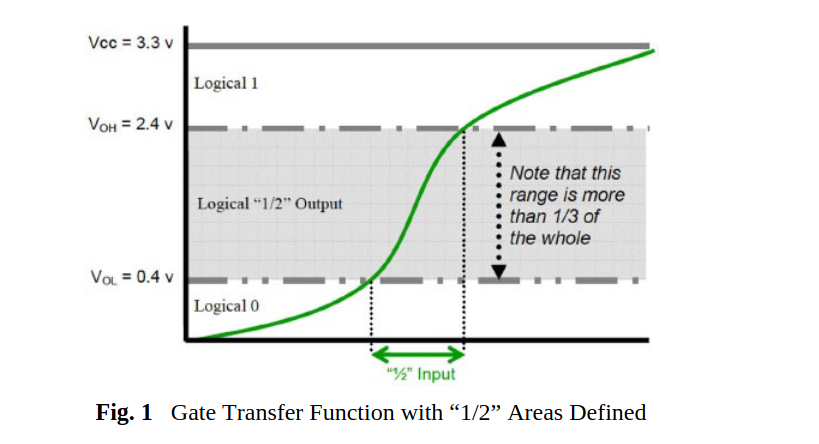

This figure gives us a sense that there is quite a lot between one and zero. It
should be clear from the graph above that computer switches could sometimes
get stuck between on and off —a condition called metastability. This can happen
when the signal oscillates rapidly between zero and one, existing in neither state
long enough to exhibit a valid output voltage. Or the voltage never gets high
enough to make the gate output one, and it never goes low enough to output
zero. Noise in the system can also produce faults that are “stuck at ½.” The
output can read “Logical ½” instead of one or zero.
Circuit designers try to make the voltage jump as fast as possible from
Logical Zero to Logical One by making the function represented by the sloping
line in the grey area very steep. Nevertheless, in practice the line between one
and zero is actually rather fuzzy. (from Beyond Zero and One by Andrew Smart)